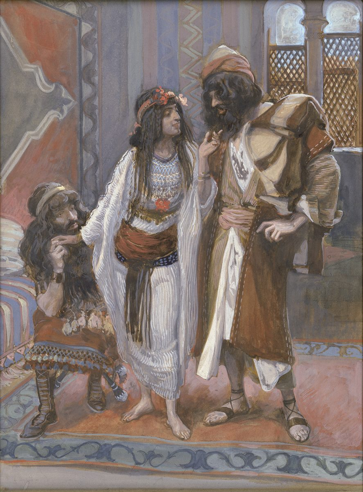

Joshua 2 — The Mister Translation

Tissot painted his Old Testament series in the last years of his life, after his illustrated Life of Christ and his journeys to Palestine; the Jewish Museum catalogues this sheet as by Tissot or a follower. The scene is the spies in her house — the arrival of v1 or the bargain of vv12–14, which the Hebrew sets on the roof and Tissot sets indoors — with a latticed window at the right. The flowers in her hair are the painter’s own touch; the Hebrew gives her no costume at all.
{kind=link}
★★★ The Hebrew says zonah, and the word is not ambiguous; what is ambiguous is the sentence around it. Ishah zonah is the plain, ordinary word for a prostitute — the one the narrator uses of Tamar at Genesis 38:15 (already on these pages) and the law uses at Deuteronomy 23:19 (already on these pages). The Greek Bible kept it (gynaikos pornēs), and so did both New Testament letters that name her, Hebrews 11:31 (already on these pages) and James 2:25 (not yet on these pages), each calling her Rhaab hē pornē, ‘Rahab the prostitute,’ without softening. ⚠ The softening came from elsewhere. The Aramaic Targum of Jonathan renders the word pundeqita, an innkeeper — and Rashi follows it, glossing her as a seller of foodstuffs; Josephus (Antiquities 5.1.2) has the spies retire ‘to a certain inn that was near to the wall’ and speaks of ‘the inn kept by Rahab,’ with no prostitute in the sentence at all. The English shelf keeps the plain word in every case but one: KJV, ASV and Geneva 1599 read ‘harlot’; the Douay-Rheims ‘a woman that was a harlot’; NIV ‘a prostitute’; NWT 1984 ‘a prostitute woman.’ Only the Living Bible manages to keep both traditions in one sentence — ‘an inn operated by a woman named Rahab, who was a prostitute’ — the Targum’s inn and the Hebrew’s trade side by side. In Spanish, RV 1909 and RV60 read «ramera», the TNM 1987 and NVI «una prostituta». This translation prints the plain word, as it did for Tamar.
★★ ‘And they lay down there’ is the same verb Hebrew uses for going to sleep and for going to bed with someone, and the narrator leaves it exactly that open. Vayishkevu shammah — shakhav is what Jacob does at Bethel with a stone for a pillow (Genesis 28:11) and what Shechem does to Dinah (Genesis 34:2), both already on these pages. The shelf resolves it the safe way: KJV reads ‘lodged there’, NWT 1984 ‘took up lodging there’, NIV ‘stayed there’; the ASV alone keeps the plain verb, ‘lay there.’ This translation keeps it too. Nothing in the chapter turns on the question, and the story has the men on the roof under the flax before anyone has lain down at all (v8) — but a translation that prints ‘lodged’ has decided something the Hebrew declined to decide.
★★ The spies are sent from Shittim — the camp where the last book ended with Israel ‘beginning to whore with the daughters of Moab.’ Numbers 25:1 (already on these pages) uses the verb zanah of that camp; this verse sends two men out of the same camp and straight into the house of a zonah, the noun from the same root. The text does not remark on it. The words do. And the men are meraggelim, the word Joseph flung at his own brothers — ‘You are spies!’ (Genesis 42:9, already on these pages); the participle stands in fourteen verses of the Hebrew Bible, and seven of them are that one Genesis chapter. Its verb, ragal, is the one this project’s own dictionary already tracks as the scouting-word the book of Numbers pointedly did NOT use for its twelve spies; this chapter is where it becomes the ordinary word for the job.
⚠ ‘Secretly’ is a word found nowhere else in this form, and Rashi offers two readings of it. The consonants of cheresh are common — a craftsman, a deaf man, to plough — but the adverb pointed chéresh, ‘silently, in secret,’ stands in one verse of the Hebrew Bible, this one. The Targum reads it ‘in secret,’ and Rashi records two more: that Joshua told the men to act as deaf-mutes (chereshim), so that people would speak freely in front of them; or, reading the last letter differently (cheres, clay), that they were to load themselves with pots and pass for potters. The shelf simply reads the adverb: KJV ‘to spy secretly’, ASV ‘two men as spies secretly’, NWT 1984 ‘two men out secretly.’
⚠ Her name is not the sea-monster’s, and Matthew spells it differently from everyone else. Rahab the woman is Rachav, with a guttural middle letter, from the root for ‘broad, wide’; the Rahab of Job 26:12 and Isaiah 51:9 (neither yet on these pages), the chaos-dragon and nickname for Egypt, is Rahav, a different word with a different middle letter, and only English spelling makes them look alike. In Greek she is Rhaab in the Septuagint, in Hebrews and in James; Matthew 1:5 (already on these pages) alone writes Rhachab, sounding the guttural, when it sets her in the genealogy of Jesus as the mother of Boaz — the Rahab entry carries the rest of her afterlife, and a rabbinic tradition, reported by Rashi at v4 from the Midrash Tanchuma, names the two unnamed spies as Phinehas and Caleb.
★★ Chafar is the verb for digging a well, and twice here it is what spies do to a country. It is what Isaac’s servants do in the wadi at Genesis 26:19 and what all Egypt does round the Nile for water at Exodus 7:24 — and it is the word the people chose at Deuteronomy 1:22 (already on these pages), ‘let them dig out the land for us,’ when they asked Moses for the twelve spies whose report cost them forty years. The infinitive with its object, lachpor et, stands in two verses of the Hebrew Bible, both in this chapter: the informers use it of the men in v2, the king of the whole land in v3. This translation keeps the picture — ‘dig out’ — exactly as the Deuteronomy page already does, so the two uses can be heard against each other. The shelf smooths it: KJV reads ‘to search out the country’ and then ‘to search out all the land’; Geneva 1599 ‘to spy out the country’ and then ‘to search out all the land’; ASV and NWT 1984 ‘to search out the land’; NIV ‘to spy out the land’; the Douay-Rheims ‘to spy the land’ in v2 and ‘to view all the land’ in v3, two renderings for one Hebrew verb two verses apart. In Spanish, RV60 reads «espiar» in both verses, the TNM 1987 «explorar» in both, and the NVI «reconocer» and then «espiar».
⚠ ‘The men who came to you’ is the king’s phrase, and it is the idiom of Genesis 38:16 as well as the ordinary verb for arriving. Ha-ba’im elayikh — ‘come to’ a woman is how Judah propositions the veiled Tamar (‘let me come in to you,’ Genesis 38:16, already on these pages), and it is also simply how anyone enters anyone’s house, which is what the king says next. The double sense is the Hebrew’s, and it is left standing here. KJV reads ‘the men that are come to thee’; NWT 1984 ‘the men that came to you’; the Living Bible replaces the sentence with a police squadron and a speech about ‘the best way to attack us’ that the Hebrew does not contain.
★★ ‘She hid HIM’ — the Hebrew verb carries a singular object for two men, and all thirteen versions on the two shelves read it as a plural. Vatitspeno, with the suffix of one man, follows ‘took the two men’ in the same clause. Rashi’s answer is that she hid them in haste and in a narrow place, ‘as if he were a single person’; a grammarian’s is that the ending is an old or defective plural; the Greek Bible reads ekrypsen autous, ‘hid them’; KJV, ASV, the Geneva 1599 and the Douay-Rheims read ‘hid them’; NIV ‘hidden them’; NWT 1984 ‘concealed them’; RV60 «los había escondido»; TNM 1987 «los ocultó». This translation reads ‘them’ with them, and records the oddity here rather than printing a sentence an English reader would take for a misprint. KJV’s ‘I wist not whence they were’ and ‘whither the men went I wot not’ (v5) are the old verb wit, to know, in two tenses; Geneva 1599 has the same ‘I wot not.’
★★★ The lie itself is the oldest ethical argument attached to this chapter, and the text passes no verdict on it. Rahab says ‘I did not know’ twice to the king’s men (v4, v5) and ‘I know’ to the spies (v9) — the same verb, yada, turned over between the two conversations. The two New Testament letters that praise her praise the hiding and the sending, not the speech: Hebrews 11:31 (already on these pages) says she ‘welcomed the spies in peace,’ James 2:25 (not yet on these pages) that she ‘received the messengers and sent them out another way,’ and the letter of Clement of Rome to Corinth, near the end of the first century, opens its chapter on her with ‘For her faith and hospitality Rahab the harlot was saved.’ The verdict on the lie was left to later readers, and two of the largest disagreed with each other only in emphasis. Augustine, in Against Lying, holds that God did good to Rahab and to the Hebrew midwives ‘not because they lied, but because they were merciful to God’s people. That therefore which was rewarded in them was, not their deceit, but their benevolence.’ Calvin, in his commentary on this verse: ‘As to the falsehood, we must admit that though it was done for a good purpose, it was not free from fault’ — and, a few sentences on, ‘it was the will of God that the spies should be delivered, but he did not approve of saving their life by falsehood.’ This translation reports the argument and does not join it; the chapter that raised it never does either.
★ The flax on the roof is a date-stamp. Pishtei ha-ets, ‘flax of the stalk,’ arukhot, ‘laid out in rows’ — cut flax is spread to dry before it is retted and combed. Exodus 9:31 (already on these pages) fixes the crop’s season: when the hail fell, ‘the barley was in the ear and the flax was in bud,’ a late-winter crop pulled in spring — which is the season the book itself will give for the crossing, at Passover (Joshua 5:10, now on these pages). Twelve of the thirteen versions on the two shelves read stalks, tow or bundles of flax: KJV, ASV and Geneva 1599 read ‘the stalks of flax’, NWT 1984 ‘stalks of flax laid in rows’, NIV ‘the stalks of flax she had laid out’, the Douay-Rheims ‘the stalks of flax, which was there.’ The Living Bible reads ‘piles of flax that were drying there’ — a reasonable inference, but the Hebrew says laid in rows, not drying. In Spanish the RV 1909 has the old word «tascos de lino», the RV60 and NVI «manojos de lino», the TNM 1987 «tallos de lino puestos en filas».
⚠ The pursuers go ‘to the fords,’ and the gate closes behind them — the same gate whose closing Rahab had used as her alibi. V5 puts the men’s supposed escape at the moment of the gate’s shutting at dark; v7 shuts it in earnest behind the king’s own men, with the spies still inside the wall. The ma’berot, the crossing-places of the Jordan, are where a fugitive from Jericho would have to be caught, and where the book will take Israel across in the very next chapter.
★★★ Rahab’s speech is stitched out of Israel’s own words, and the stitching is checkable. ‘The terror of you has fallen upon us … all the inhabitants of the land melt away’ is Exodus 15:15–16 (already on these pages), the Song of the Sea, sung forty years earlier on the far side of the water she is about to name: ‘all the inhabitants of Canaan melt away … terror and dread fall upon them.’ the exact form namogu, ‘they melt away,’ stands in four verses of the Hebrew Bible — the Song, this verse, the spies’ report at v24, and Jeremiah 49:23 (not yet on these pages) — so three of its four appearances are the prophecy and its two fulfilments. The eimah, ‘terror,’ is the one Jehovah promised to send ahead of Israel at Exodus 23:27 (already on these pages), and Deuteronomy 2:25 and 11:25 (already on these pages) say the same with two other nouns. A woman in Jericho is reporting, from the receiving end, that the thing Israel sang has happened.
★★★ And v11’s confession is Deuteronomy 4:39, nearly word for word. ‘Jehovah your God, he is God in the heavens above and on the earth below’ — the phrase ba-shamayim mi-ma’al ve-al-ha’arets mi-tachat stands in three verses of the Hebrew Bible: Deuteronomy 4:39 (already on these pages), Moses to Israel on the plains of Moab; this verse, Rahab to two Israelites on a roof in Jericho; and 1 Kings 8:23 (not yet on these pages), Solomon at the dedication of the temple. Between the lawgiver and the king who built the house, the one other voice to say it is hers, and she is not yet one of the people. The shelf keeps the two halves in every case — KJV ‘in heaven above, and in earth beneath’, ASV ‘in heaven above, and on earth beneath’, NWT 1984 ‘in the heavens above and on the earth beneath’, NIV ‘in heaven above and on the earth below’ — except the Living Bible, which drops the cosmology for a comparative: ‘the supreme God of heaven, not just an ordinary god.’
★★ Two different Hebrew verbs melt in this speech, and this translation keeps them apart. The inhabitants melt away (mug, v9 and v24 — the Song’s verb); ‘our heart melted’ (masas, v11) is the other verb, the one the ten spies’ report used at Deuteronomy 1:28 (already on these pages), ‘our brothers have melted our heart,’ and the war-law fears at Deuteronomy 20:8 (already on these pages). The clause vayimas levav, ‘and the heart melted,’ stands in three verses of the Hebrew Bible, all of them in Joshua — here, of Canaan; at 5:1, of the Amorite and Canaanite kings when they hear of the Jordan; and at 7:5, of ISRAEL, after Ai. The verb Rahab uses of her own people is the one the book will turn on Israel five chapters later. ‘No spirit rose up any more in any man’ divides the thirteen versions three ways: six keep the breath-word — ASV ‘any more spirit’, the Douay-Rheims ‘any spirit in us’, NWT 1984 ‘no spirit has arisen yet in anybody’, RV 1909 and TNM 1987 «espíritu», RV60 «aliento»; five turn it into courage — KJV and Geneva 1599 ‘courage’, NIV ‘everyone’s courage failed’, the NWT 2013 ‘any courage’, the TNM 2019 «el valor»; and two paraphrase, the Living Bible (‘any fight left in him’) and the NVI («amedrentados y descorazonados»).
★ Sihon and Og are named with the verb of the ban, and it is Rahab who uses it. ‘Whom you devoted to destruction’ is hecheramtem, the cherem verb, which Deuteronomy 2:34 and 3:6 (already on these pages) used of exactly those two campaigns. This form of the verb stands in two verses of the Hebrew Bible — here, and 1 Samuel 15:3 (not yet on these pages), Samuel’s order to Saul against Amalek. KJV and ASV read ‘whom ye utterly destroyed’; NWT 1984 ‘whom YOU devoted to destruction’; NIV ‘whom you completely destroyed’; the Douay-Rheims simply ‘whom you slew’. She has, in other words, heard exactly what a city under the ban can expect, and is bargaining with that knowledge.
⚠ A tension the chapter records and does not explain: the spies are about to swear an oath to a Canaanite. Deuteronomy 7:2 (already on these pages) is explicit — ‘You shall cut no covenant with them, and show them no favour’ — and the war-law of Deuteronomy 20:16–17 (already on these pages) leaves nothing alive in the cities of the land. Yet the oath of vv12–20 is sworn ‘by Jehovah,’ and Joshua 6:17 and 6:25 (already on these pages) keep it in full. Readers have taken the exemption as earned by her confession in this speech, as an exception the ban itself allowed, or as one of the book’s deliberate seams (the Gibeonites of Joshua 9, not yet on these pages, will be the next). The Hebrew simply records both the law and the oath and leaves them standing.
★★★ Rahab asks for chesed and is promised chesed ve-emet — the pair that belongs to the God of Exodus 34:6. Chesed, covenant kindness, is her own word for what she has done, and for what she asks (twice in v12); ot emet, ‘a true sign,’ is what she asks in return, and the phrase stands in one verse of the Hebrew Bible, this one. The spies answer with the full pair, chesed ve-emet, ‘kindness and faithfulness’ (v14) — the words Abraham’s servant used at Genesis 24:49 (already on these pages), that Jacob asked of Joseph on his deathbed at Genesis 47:29 (already on these pages), and that Exodus 34:6 (already on these pages) makes an attribute of Jehovah himself. The pair stands in fifteen verses of the Hebrew Bible. The shape of the bargain is older still: a foreigner asks Israel’s people to swear reciprocal chesed ‘as I have done with you,’ which is what Abimelech, a Philistine king, asked of Abraham at Genesis 21:23 (already on these pages), and David will one day promise the pair to Ittai the Gittite (2 Samuel 15:20, not yet on these pages). The shelf reaches for its stock English: KJV ‘shewed you kindness … deal kindly and truly with thee’; ASV ‘dealt kindly … deal kindly and truly’; Geneva 1599 ‘mercy … mercifully and truly’; the Douay-Rheims ‘mercy … mercy and truth’; NWT 1984 ‘loving-kindness … loving-kindness and trustworthiness’; NIV ‘kindness … kindly and faithfully.’ In Spanish, RV 1909 and RV60 read «misericordia … misericordia y verdad», the TNM 1987 «bondad amorosa … bondad amorosa y confiabilidad».
★★ ‘My sisters’ is written in the singular and read in the plural, and every other family list in this story leaves the sisters out. The consonants of v13 read achoti, ‘my sister’; the Masoretes mark it to be read achyotai, ‘my sisters,’ and all thirteen versions on the two shelves read the plural. The Greek Bible has no sisters here at all (‘the house of my father, my mother, and my brothers’). Nor does the spies’ own list in v18 — father, mother, brothers, ‘all your father’s household’ — nor the rescue at Joshua 6:23 (already on these pages), which brings out ‘Rahab, her father, her mother, her brothers, and all who belonged to her.’ Of the four lists of her family in the story — v13, v18, 6:23 and 6:25 — only hers names the sisters, and the written text has one of them.
★ ‘Our life in place of yours, even to death’ is a substitution formula, and the Greek Bible hands half the verse to Rahab. Nafshenu tachteikhem lamut — the phrase stands in one verse of the Hebrew Bible. KJV and ASV read ‘Our life for yours’; Geneva 1599 ‘Our life for you to die’; the Douay-Rheims ‘Be our lives for you unto death’; NWT 1984 ‘Our souls are to die instead of YOU people!’; NIV ‘Our lives for your lives!’; the Living Bible drops the oath-formula for ‘The men agreed.’ In the Septuagint the men say only ‘Our life for yours, even to death,’ and it is Rahab who continues, turning the promise back into a demand: once the city has been delivered to them, ‘you shall deal mercifully and truly with me.’
★★ ‘Her house was be-qir ha-chomah’ — in the qir of the chomah, the wall of the rampart. Hebrew has two words here where English has one: qir is the wall of a house, a surface; chomah is a city’s defensive wall. A house whose wall is the rampart, and whose window opens outward, is a familiar shape in the ancient Near East: casemate fortification, two parallel walls with rooms built between them, is found at several Iron Age sites in the land. Whether Jericho had such a wall standing at the time this story is set is a different question, and the same century-old dispute the Jericho entry already declines to settle; what can be read here is the sentence, not the excavation. ⚠ The Septuagint has none of it: its v15 reads, in full, kai katechalasen autous dia tēs thyridos — ‘and she let them down through the window’ — and the explanation of where the house stood is absent. The English shelf, all translating the Hebrew, keeps it: KJV and Geneva 1599 read ‘her house was upon the town wall, and she dwelt upon the wall’; ASV ‘upon the side of the wall’; NWT 1984 ‘on a side of the wall, and it was on the wall that she was dwelling’; NIV ‘the house she lived in was part of the city wall’; the Douay-Rheims, from the Latin, ‘her house joined close to the wall.’ In Spanish, RV 1909 reads «á la pared del muro» (keeping both nouns, as the Hebrew does), RV60 «en el muro de la ciudad», TNM 1987 «en un lado del muro», and the NVI «sobre la muralla de la ciudad».
★ She lets them down by a chevel, a rope; the thing in the window three verses later is a different word. KJV and ASV read ‘by a cord’ here and ‘line’ at v18, NWT 1984 ‘by a rope’ and then ‘cord’; the Living Bible collapses the two into one ‘rope’ and has it ‘hanging from the window’ as the sign, which is a tidier story than the Hebrew tells. ‘The hill country’ (ha-harah, ‘to the mountain’) is the limestone escarpment that rises immediately west of Jericho, cut with caves; KJV reads ‘the mountain’, NIV ‘the hills’, NWT 1984 ‘the mountainous region.’ It is the wrong direction for men going home to Shittim, which is the point of it.
★★★ The word for the cord in the window is tiqvah, and everywhere else in the Hebrew Bible tiqvah means hope. The noun stands in thirty-five verses of the Hebrew Bible: in thirty-one it is hope — Job’s and Proverbs’ word for it, Ruth’s ‘if I should say I have hope’ (Ruth 1:12, already on these pages), the ‘outcome and a hope’ of Jeremiah 29:11 (already on these pages); in two it is a man’s name; and in two — v18 and v21 of this chapter — it is a cord. The root is qavah, to stretch, whence both a line pulled taut and the waiting that is pulled taut; English has no word that does both jobs, and this translation prints ‘cord’ and sends the reader here. ⚠ The rabbis noticed the coincidence and built on it: the Talmud (Megillah 14b) makes the prophetess Huldah, ‘the wife of Shallum son of Tikvah’ (2 Kings 22:14, not yet on these pages), a descendant of Rahab on the strength of this word, and in the same passage counts eight prophets who were also priests among her descendants, Jeremiah among them, and has her marry Joshua — tradition, reported here as tradition. The shelf keeps the cord and loses the pun, as it must: KJV and ASV read ‘this line of scarlet thread’ at v18 and ‘the scarlet line’ at v21; Geneva 1599 ‘this cord of red thread’ and ‘the red cord’; NWT 1984 ‘this cord of scarlet thread’ and ‘the scarlet cord’; NIV and the Douay-Rheims ‘this scarlet cord’; the Living Bible ‘this rope’ and ‘the scarlet rope.’ In Spanish the RV 1909 and RV60 read «este cordón de grana», the TNM 1987 «este cordón de hilo escarlata», the NVI «este cordón rojo».
★★★ A marked house, a family gathered inside it, and a warning not to step out of the door: the terms are the Passover night’s, in reverse. Exodus 12:22 (already on these pages) put blood on the lintel and doorposts and ordered that ‘none of you shall go out from the door of his house until morning’; here it is scarlet in a window, and ‘anyone who goes out of the doors of your house into the street — his blood is on his own head.’ That night the marked houses were Israel’s and the city was Egypt; this time the marked house is a Canaanite’s and the destroyer is Israel. The earliest Christian reading made the colour the point: Clement of Rome, writing to Corinth around the end of the first century, says the spies’ sign ‘that she should hang out from her house a scarlet thread’ was ‘showing beforehand that through the blood of the Lord there shall be redemption unto all them that believe and hope on God,’ and closes: ‘not only faith, but prophecy, is found in the woman.’ That is his reading, not the chapter’s; the chapter’s own scarlet is a signal a soldier can see from the street.
★★ The scarlet thread has been tied once before in this Bible — on the wrist of Tamar’s son. At Genesis 38:28 (already on these pages) the midwife ‘took a scarlet thread and tied it on his hand’ — shani and the verb qashar, to tie, exactly the pair of v21, vatiqshor et-tiqvat ha-shani. Tamar was taken for a zonah (38:15); Rahab is one; and Matthew 1:3 and 1:5 (already on these pages) set both women, two verses apart, in the line of Jesus. The exact phrase chut ha-shani, ‘thread of scarlet,’ stands in two verses of the Hebrew Bible: v18 here, and Song of Solomon 4:3 (not yet on these pages), ‘like a thread of scarlet are your lips.’ The dye itself — the crushed kermes insect, prized because it did not wash out — is the shani of Isaiah 1:18 and the cleansing rite of Leviticus 14:4 (both already on these pages).
★★ ‘His blood is on his own head’ is a formula of transferred liability, and naqi, ‘clear,’ is its other half. Damo be-rosho stands in two verses of the Hebrew Bible: here, and Ezekiel 33:4 (not yet on these pages), of the man who hears the watchman’s trumpet and does not take warning — the same picture of a warning given and a death that is then the man’s own fault. The spies say neqiyim three times (v17, v19, v20), the adjective this project’s dictionary already tracks from Deuteronomy 19’s ‘innocent blood’: being clear of a charge, not being pure. KJV reads ‘blameless’ at v17 and ‘guiltless’ at v19 and ‘quit’ at v20, three English words for one Hebrew one; ASV ‘guiltless’ throughout; NWT 1984 ‘free from guilt’; the Douay-Rheims ‘blameless’ then ‘quit’. ⚠ The NIV restructures vv17–18 into a single conditional — ‘This oath you made us swear will not be binding on us unless, when we enter the land, you have tied this scarlet cord’ — and the TNM 2019 does the same in Spanish, «Solo estaremos obligados a cumplir este juramento»; which is the sense, but not the shape: the Hebrew has the men declare themselves clear first (v17), then state the condition with ‘Look’ (v18), and this translation keeps that order, with a dash to carry the sentence across.
★★★ V24 repeats v9, and the repetition is the report. ‘Jehovah has given … the land; and all the inhabitants of the land melt away before us’ — natan Yehovah … namogu kol-yoshvei ha’arets — is what Rahab said on the roof, with the pronouns turned round. The two men bring Joshua nothing they observed: no gates, no walls, no count of fighting men. They bring back a Canaanite woman’s sentence, and the book treats it as intelligence enough. Set beside Numbers 13:31–33 (already on these pages), where ten of twelve returned with measurements — giants, fortified cities, ‘we were like grasshoppers’ — and, as Deuteronomy 1:28 remembers it, melted the nation’s heart, the reversal is exact: two spies, one witness, and it is the land that melts.
★ Three days, twice, and a calendar that does not quite close. The spies hide three days (v16, v22); Joshua 1:11 (already on these pages) had the officers announce the crossing ‘in three more days.’ Whether those are the same three days is a question as old as the commentaries; Rashi, at v1, works it out by having the spies sent during the days of mourning for Moses, returning to Joshua by night, and the crossing fall on the fifth day after the sending — a harmonisation, offered as one. The NWT 1984 reads ‘kept dwelling there three days’ for v22’s vayeshvu; KJV and ASV ‘abode there three days’; Geneva 1599 ‘there abode three days’; NIV ‘stayed there three days.’ On ‘melt away’ at v24 the shelf spreads: KJV and Geneva 1599 read ‘faint’; ASV ‘melt away’; NWT 1984 ‘grown disheartened’; NIV ‘melting in fear’; the Douay-Rheims ‘overthrown with fear’; the Living Bible ‘scared to death.’
★ ‘All that had befallen them’ — and then a closed paragraph. Ha-motse’ot otam, literally ‘the things that found them.’ The Masoretic text ends the chapter on a setumah, a closed break, and the next chapter opens with Joshua rising early and the whole camp moving from Shittim to the river (Joshua 3, already on these pages). Rahab is not mentioned again until the wall comes down.
Echoes paid. Exodus 15:15–16’s song of the melting inhabitants and the falling terror, reported from inside Canaan at v9. Deuteronomy 4:39’s ‘God in the heavens above and on the earth below,’ recited by a Canaanite at v11. Deuteronomy 1:22’s spy-verb chafar, ‘dig out,’ in the mouth of the king of Jericho at vv2–3, and 1:28’s melted heart at v11. Deuteronomy 2:34 and 3:6’s ban on Sihon and Og, recited back to Israel at v10. Numbers 25:1’s Shittim, left for a zonah’s house at v1. Genesis 42:9’s ‘spies,’ and Genesis 21:23’s oath of reciprocal chesed sworn by a foreigner, at vv12–14. Genesis 38:28’s scarlet thread, tied a second time at v21. Exodus 12:22’s marked house and closed door, at vv18–19. And Joshua 1:11’s three days, at vv16 and 22.
Echoes planted. The oath of vv12–20, kept at Joshua 6:17 and 6:22–25 (already on these pages). Vayimas levav, the melted heart, paid for the Amorite kings at Joshua 5:1 (now on these pages) and waiting for Israel at Joshua 7:5 (already on these pages). Rahab’s creed, to be repeated by Solomon at 1 Kings 8:23; ‘his blood on his own head,’ by Ezekiel’s watchman at 33:4; and tiqvah, to become a ‘door of hope’ in the valley of Achor at Hosea 2:17, the valley Joshua 7 names (Joshua 7 already on these pages, Hosea and Matthew 1 not yet). And the woman herself, at Matthew 1:5 and Hebrews 11:31 (already on these pages) and James 2:25 (not yet on these pages).
Decisions. Hebrew and English verse numbers align through this whole chapter, and the Masoretic text carries a single break, the setumah that closes it after v24. Zonah is ‘prostitute,’ as at Genesis 38:15; shakhav at v1 is ‘lay down,’ not ‘lodged’; chafar is ‘dig out,’ as the Deuteronomy 1 page already has it; the two melt-verbs are kept apart as ‘melt away’ (mug) and ‘melted’ (masas); chesed is ‘kindness’ and chesed ve-emet ‘kindness and faithfulness,’ as at Genesis 24:49; naqi is ‘clear’; tiqvah is ‘cord,’ with the pun carried by the note and the dictionary; cherem is ‘devoted to destruction’ and yam suf ‘the Red Sea,’ both this project’s standing renderings. The singular vatitspeno at v4 is read as a plural with all thirteen versions on the two shelves, and the grammar is recorded in the note rather than in the verse. ‘Jehovah’ for the tetragrammaton continues this project’s own convention; the narrator never speaks the name in this chapter — Rahab does, four times (vv9–12), and the spies twice (v14, v24).
Library. Three new dictionary entries in both languages: tiqvah, the word for hope that is here a cord; mug, the Song of the Sea’s melting-verb, which this chapter uses twice and the book will not use again; and chafar, the digging-verb that twice means spying. Five existing entries extended in both languages: zonah, gaining the Targum’s innkeeper and the Greek that refused it; chesed and emet, each gaining the pair as a Canaanite receives it; shani, gaining the cord and its earlier knot on Zerah’s wrist; and naqi, gaining the three-fold ‘clear’ of the spies’ oath. Seven encyclopedia entries updated: Rahab, Shittim, Jericho, Joshua, Sihon, Og and the Amorites, each now pointing at this chapter.
⚠ A note on order: Joshua stands on these pages at chapters 1, 2, 3, 4, 5, 6 and 7. Joshua 8–24 remain the open sequence; next in this book is Joshua 8, the ambush at Ai, the king under the heap, and the altar on Mount Ebal.